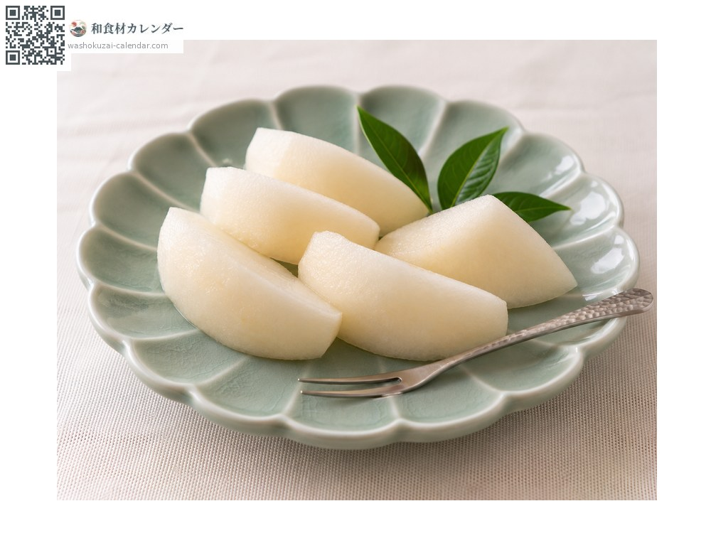
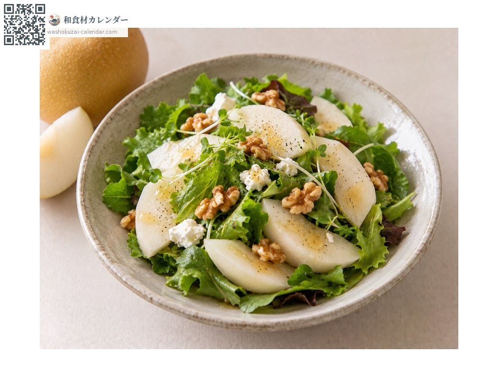
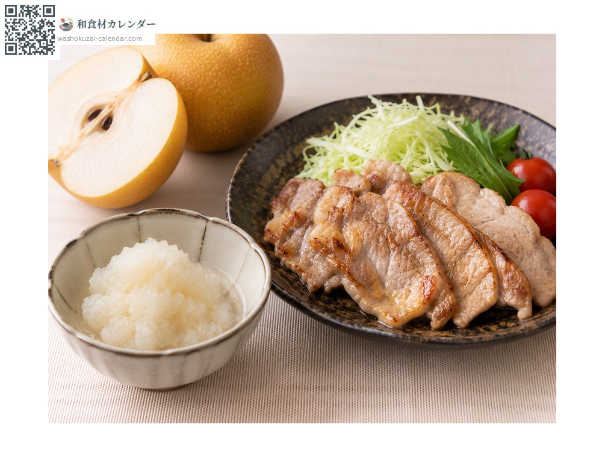
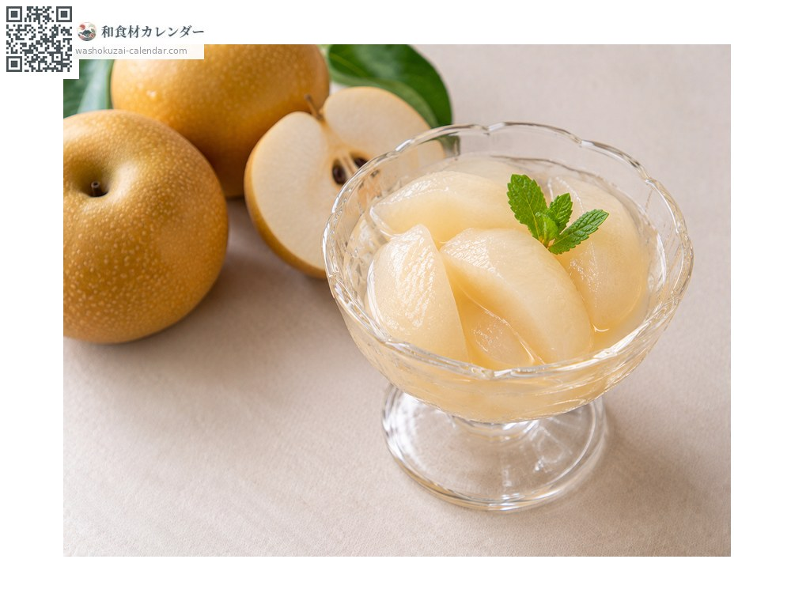

Fruit
Japanese pear
ナシ なし nashi
Also known asnashi
At its best in Aug, Sep, Oct

When it is at its best
Jan
Feb
Mar
Apr
May
Jun
Jul
Aug
Sep
Oct
Nov
Dec
In seasonAvailable
How to cook

Eaten fresh
Chilled and peeled.

Salad
Sliced thin with prosciutto.

Grated
Grated to tenderise meat.

Compote
Poached in white wine.
How to choose
A firm stem and taut skin, with a plump, heavy base.
Storage
Bag and refrigerate. It does not ripen further, so it is at its best when bought.
Main areas
Good to know
Varieties such as Kosui, Hosui and Nijisseiki appear at different times. Because it does not ripen after picking, harvest time is eating time.